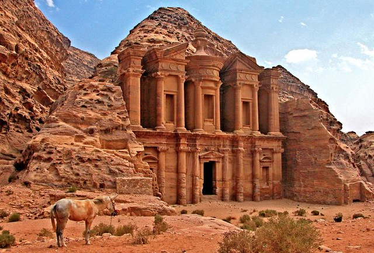

PETRA

Petra es una ciudad arqueológica famosa en el desierto, al sudoeste de Jordania. Fundada alrededor del 300 a. C., era la capital del Reino Nabateo. Se puede acceder a través de un estrecho cañón llamado Al Siq y contiene tumbas y templos tallados en acantilados de arenisca de color rosa, motivo por el que se la conoce como la "Ciudad Rosa". Su estructura más famosa probablemente sea el Al Khazneh de 45 metros de altura, un templo con una fachada y decoración al estilo griego, que se conoce como El Tesoro.